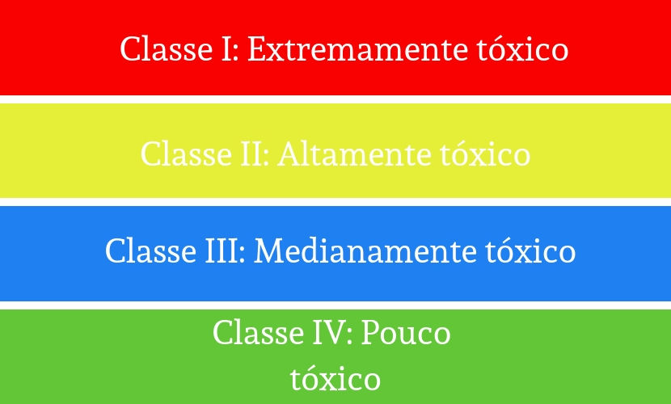

OS AGROTÓXICOS
O QUE É?
Os agrotóxicos ou defensivos agrícolas são produtos químicos utilizados na produção agrícola para o aumento de sua produtividade, combatendo e controlando sua manufatura de pestes.
Podendo ser divido em categorias, como: Herbicidas que combatem plantas invasoras, inseticidas que combatem os insetos, fungicidas que combatem fungos e bactericidas que combatem as bactérias.


NÍVEIS DAS TOXICIDADES
A Anvisa divide em quatro classes os níveis de toxicidade dos pesticidas em relação à saúde humana, de acordo com as cores e doses a serem utilizados, vermelho indica ser extremamente tóxicos, amarelo indica ser altamente tóxicos, azul indica ser medianamente tóxicos e verde indica ser pouco tóxico.
VANTANGENS
- Sempre utilizar doses recomendadas por um órgão responsável, para que não haja problemas ambientais e que garantem o controle de pragas e doenças nas lavouras.
- Redução de preços dos alimentos que são cultivados com o uso dos agrotóxicos, em relação aos alimentos orgânicos.
- Utilizando agrotóxicos controla-se pragas e doenças, levando ao aumento de produtividade e qualidade visual dos alimentos
DESVANTAGENS
- Uso em excesso pode levar riscos à saúde dos que ingerem o alimento.
- Trabalhadores correm riscos de serem intoxicados.
- O solo e os cursores de água podem ser contaminados com o mau uso dos agrotóxicos.
- Transporte e armazenamento inadequado traz riscos à saúde dos seres vivos.